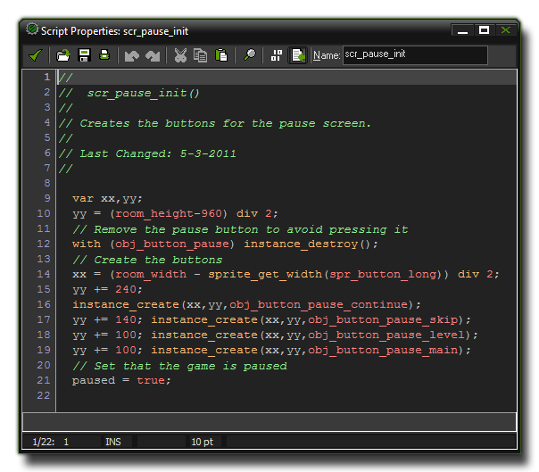

Un programa es un conjunto de instrucciones llamadas sentencias, que son interpretadas
por GameMaker: Studio con el propósito de hacer que algo ocurra dentro de un juego. Ese
"algo" puede ser una acción tan simple como sumar 2 más 2 para obtener 4, o tan complejo
como hacer que un enemigo huya cuando su salud baja de cierto nivel. La estructura de un programa
varía enormemente depndiendo de las funciones que usa, pero reduciéndolo a su estructura más
básica, la representación de cualquier programa sería:
<statement>;
<statement>;
...
Las sentencias deben estar separadas con un símbolo de punto y coma ';' para prevenir errores con declaraciones de variables y para mantener su código limpio y ordenado, y puede consistir de declaraciones de variables, expresiones y llamadas a funciones o scripts especificos. Ahora veamos un típico programa de GML , más precísamente un programa creado en el Editor de Scripts de GameMaker: Studio: 
Existen diversos tipos de sentencias, las cuales se discutirán en las siguientes secciones del manual.